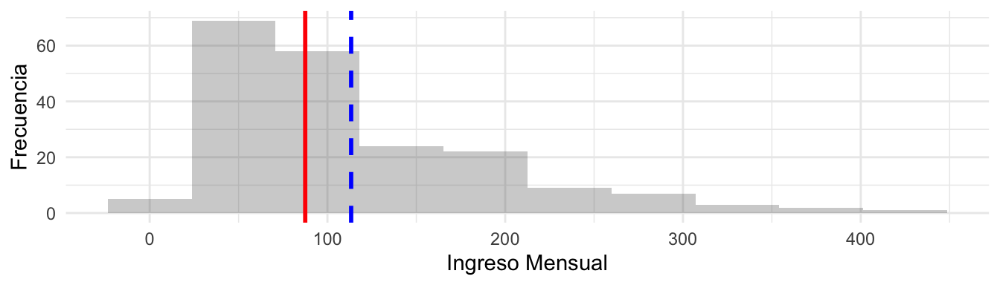
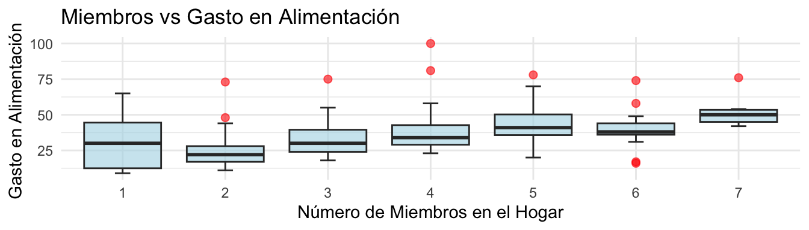
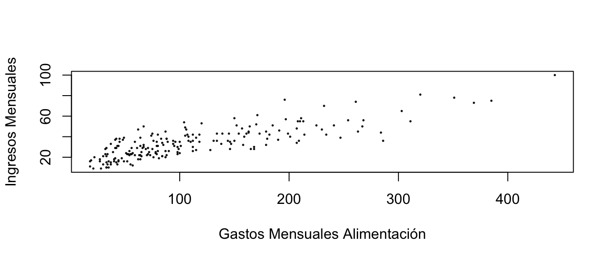
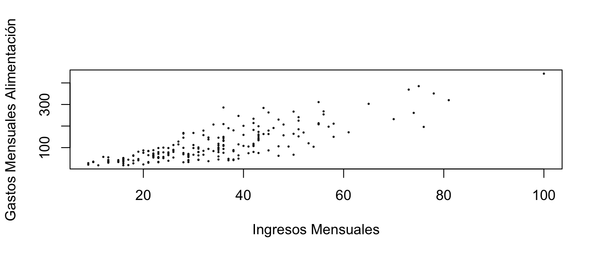

| Ingreso | Gastos | Miembros | zona | cod postal |
|---|---|---|---|---|
| 84 | 34 | 5 | Nazareno | 1073 |
| 37 | 15 | 2 | Corocito | 1209 |
| 108 | 36 | 5 | Antonio José de Sucre | 1073 |
| 70 | 22 | 3 | Colonia Mendoza | 1209 |
1 er. Examen Parcial / Prof. José M. Avendaño I. / Fecha: 25-11-2025
Nombre y Apellido: _________________________ / C.I.: ______________
1 Análisis Conjunto de Datos
En la cátedra de Estadística de la carrera de Contaduría se realizó un estudio de tipo _______________ para obtener una muestra de estudiantes de la FACES.
La recolección de datos se llevó a cabo en la zona de espera de los ascensores (planta baja), aprovechando el tiempo de espera de los usuarios para realizar la entrevista. Se registraron las siguientes variables: ingreso mensual del núcleo familiar, gasto mensual en alimentación (ambos en unidades monetarias), número de miembros del grupo familiar, zona de residencia y código postal.
A continuación se presentan las primeras 4 filas del conjunto de datos recolectados que contiene un total de 200 observaciones.
Indique los tipos de variables recolectadas y el tipo de estudio realizado (linea subrayada anterior) (3 ptos).
En la siguiente figura se presenta un histograma para la variable “Ingreso Mensual” donde las línea verticales representan la mediana y la media.

Adicionalmente, la variable en estudio presenta los siguientes estadísticos:
Min. 1st Qu. Median Mean 3rd Qu. Max. 18.00 54.75 87.50 113.34 158.25 443.00La desviación típica (dt) es 79.45Represente en el gráfico mediante líneas verticales 1 y 2 desviaciones típicas (solo para valores positivos en el eje de las \(x\)), y en la intersección con dicho eje, señale el valor donde ocurre la intersección, teniendo de referencia la medida de tendencia central apropiada. (1 pto.)
Cuántos valores de la variable ingreso mensual, identifica que se encuentran a) en el primer cuartil b) tercer cuartil (0,5 ptos).
¿Cuál es el RIC (IQR) del Ingreso Mensual? (0,5 ptos.)
Para la variable Ingreso Mensual, cree un gráfico de caja para la variable Ingreso mensual (2 ptos.)
Calcule para la variable Ingreso Mensual los valores que definen a los bigotes (whiskers) y añádalos al gráfico anterior. (1 pto.)
Indique la modalidad de la distribución, los posibles sesgos o asimetría en caso de aplicar. Cuál es el significado de la asimetría desde un punto de vista económico y las razones que motivan que ambas medidas de tendencia central no sean iguales y cuál medida cree que representa mejor a la familia del estudiante típico (4 ptos.)
Del siguiente gráfico de caja, qué relaciones puede apreciar entre las variables Miembros del Grupo Familiar y el Gasto Mensual en alimentación (1 pto.)

¿Qué observaciones puede hacer sobre la recolección de datos que realizaron los estudiantes de contaduría, de acuerdo a lo repasado con respecto al muestreo?¿Considera que la entrevista a 200 personas, sabiendo que pueden haber unos 800 estudiantes, le parece un método adecuado que representa a todos los estudiantes de la Facultad? (1 pto.)
Cuál de las relaciones de asociación, según lo que se muestra cada gráfico, le parece que tiene más sentido. Sólo para el gráfico que seleccionado, justifique su elección, indique el tipo de relación y cualquier otro elemento de importancia. (2 ptos.)


II- Medidas de Tendencia Central
La elección de una medida de tendencia central adecuada es crucial para la interpretación económica. Teniendo en cuenta las siguientes fórmulas para el cálculo de distintos tipos de medias:
| Ponderada | Armónica | Geométrica | Aritmética |
|---|---|---|---|
| \[\bar{x}_w = \frac{\sum_{i=1}^{n} w_i x_i}{\sum_{i=1}^{n} w_i}\] | \[H = \frac{n}{\sum_{i=1}^{n} \frac{1}{x_i}}\] | \[G = \sqrt[n]{x_1 \times x_2 \times \cdots \times x_n}\] | \(xˉ=\frac{\sum_{i=1}^{n}}{n}=\frac{x1+x2+⋯+xn}{n}\) |
Indique un caso o contexto económico específico en el cuál es recomendado o necesario el uso de cada una de estas cuatro medias. Explique brevemente por qué es la medida más apropiada en ese escenario. (2 ptos.)
Una empresa de capital de riesgo registra las siguientes tasas de crecimiento porcentual anual (R) sobre su portafolio de inversión durante un período de cinco años (2019-2023).
Año Tasa de Crecimiento Anual (Ri) 2019 3,5% 2020 2,6% 2021 3,1% 2022 4,2% 2023 5,3% Para calcular la media que representa la tasa de crecimiento promedio anual compuesta (o el factor multiplicativo promedio) de la inversión, se deben usar los factores de crecimiento (1+Ri), es decir: x1=1+0,035=1,035 ; x2=1+0,026=1,026;….; x5=1+0,053=1,053
Medida de Tendencia Central : Indique cuál es la medida de tendencia central (de las cuatro listadas) que mejor representaría la tasa de crecimiento promedio anual compuesta de esta serie, y justifique brevemente su elección en términos económicos. (1 pto.)
Implementación de la Fórmula Indique la implementación de la fórmula con la cuál se calcularía dicha media, utilizando los valores transformados de la serie (es decir, xi=1+Ri). (No es necesario realizar el cálculo final). (1 pto.)